05-Diffusion (下): 从 Latent Diffusion 到 DiT / FLUX
TL; DR：给 diffusion 补 backbone → 走两代 real-world 文生图产品：U-Net 时代（LDM / SD1.x / SDXL = U-Net + latent + cross-attn + CFG）→ Transformer 时代（DiT → MMDiT，SD3 / FLUX 再换训练目标 ε → v）
- [Quick Ref for 手写 code]：MiniSD (§2.5) + MiniFLUX (§4.2) ｜ ipynb ｜ colab
- MiniSD = 框架 (BasicDDIM + 三处 diff)，主干 U-Net 只 call 不展开
- MiniFLUX = MiniSD 换 v-prediction + 手写 Transformer backbone（DiT / MMDiT block）
- [可能会考的面试点]：text 注入/ DiT & MMDiT（没面过我猜的）
- 原理地基
- Diffusion 框架 DDPM / DDIM：01_04_Diffusion基础.md
- Transformer / LLama：01_01_Transformer.md
- ViT / Llava：01_03_VLM.md
前言
Diffusion 的实现分两层，上篇只动了框架层，本篇两层都动：
- 框架（idea 层）：加噪设计、训练目标。上篇 01_04_Diffusion基础.md 在这层实现了最小核 BasicDDIM；本篇往上叠 3 个产品化增量
- 噪声网络 \(\epsilon_\theta\)（计算层）：框架每步调用的网络，上篇一直当黑盒；本篇补上实现——U-Net（§1）、DiT → MMDiT（§3）
两层增量按时间线组合成两代产品，也是本篇的章节安排：
- U-Net 时代：§1 U-Net + §2 LDM 框架（latent + cross-attn + CFG）→ SD1.x / SDXL
- Transformer 时代：§3 DiT → MMDiT + §4 flow matching（ε → v）→ SD3 / FLUX
之后 §5 代际对照表、§6 两篇总结、§7 端到端代码。
[贯穿全篇的线索]
backbone 无论怎么换，\(\epsilon_\theta\) 都是同一个三输入函数 \(\epsilon_\theta(z_t, t, c)\)：
- 图像 \(z_t\)：\(t\) 时刻的带噪图。U-Net 里是空间 Tensor；Transformer 里过 conv 切 patch 变 token
- 时间步 \(t\)：标量，当前噪声程度
- 文本条件 \(c\)：§2.2 起加入
符号约定：\(x\) = 像素图；\(z\) = VAE latent，\(z=\text{VAE.encode}(x)\)（§2.1）。下标是时刻：\(z_0\) 干净图、\(t\) 最大时纯噪声。
1. 基础 backbone: U-Net
BasicDDIM 是框架层，把噪声预测网络 \(\epsilon_\theta\) 当黑盒调用；本节补上它的具体实现。
SD1.x / SDXL 用的是 U-Net，原是 2015 年 Ronneberger 等人做医学图像分割的架构。diffusion 沿用它做噪声预测网络。
本节顺序：原版 U-Net（§1.1）→ SD 怎么改它（§1.2–§1.3）→ 为什么 2023 起被换掉（§1.4）。
只想懂 FLUX 一系的话，SD U-Net 的细节（§1.2–§1.3）可以跳过
1.1 原始 U-Net：纯 CNN Encoder Decoder + skip
题外话：这是主包本科毕设时候的模型。死去的记忆它袭击我
原始 U-Net 是个很简洁的纯 CNN：对称的 Encoder–Decoder + 同层 skip connection，形状像字母 U。
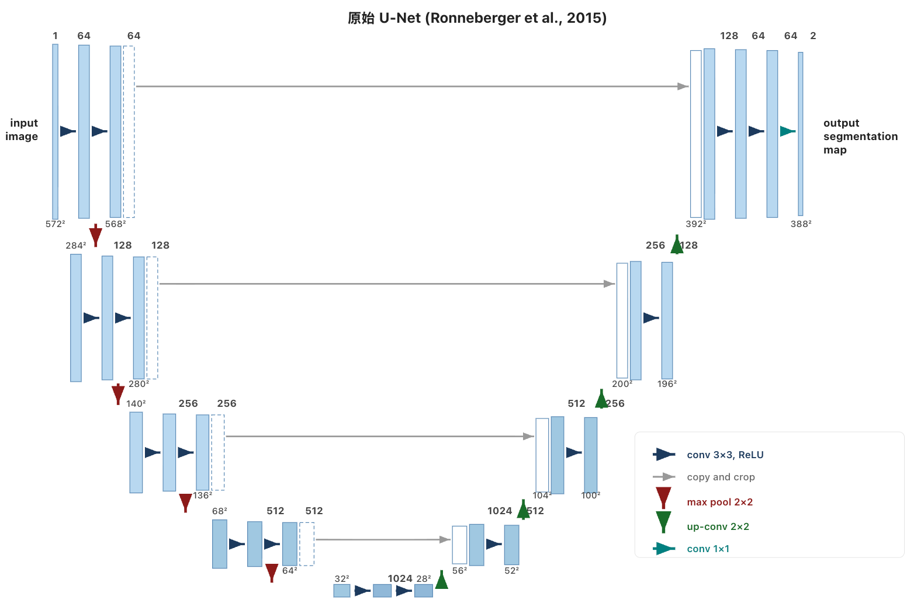
每一层只做两件事：
- 两次 Conv 3×3 + ReLU：提取特征。用 valid padding（不填充），所以每次卷积空间缩小 2：
572→570→568。 - 下采样 / 上采样：encoder 用 Max Pool 2×2（空间 ÷ 2），decoder 用 Up-Conv 2×2（空间 × 2）。
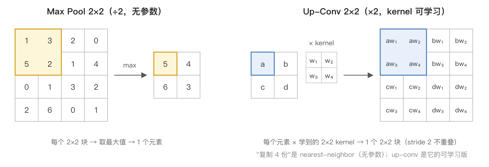
关键设计是 skip connection（copy & crop）：encoder 第 \(i\) 层的特征图拷贝一份，裁剪后沿通道拼接（concat）到 decoder 第 \(i\) 层。高分辨率细节由此直接跳到 decoder 同层，不必绕过 U 型底部；decoder 在这个基础上融合来自底部的全局语义。
为什么要 crop？valid padding 让 encoder 同层特征图比 decoder 的大一圈（568×568 vs 392×392），要从中心裁剪对齐。SD 改用 same padding 后尺寸一致，直接 concat。
通道变化规律：encoder 逐级通道翻倍（64→128→256→512→1024），decoder 逐级减半。这是 CNN 的经典设计：空间缩小、通道增大，用更多通道编码更抽象的语义。
要注意的：原版 U-Net 没有 attention、没有归一化层（BatchNorm / GroupNorm）、也没有任何条件注入，完全是朴素的卷积堆叠。后面 diffusion 的改造全是往这个骨架上加东西。
1.2 从原版到 SD 的改造
diffusion 沿用了 U-Net 的骨架（Encoder Decoder + skip），但每层内部做了大幅改造，使之成为一个CNN + Transformer 混合体。改动可以按「替换现有组件」和「新增模块」分成两类：
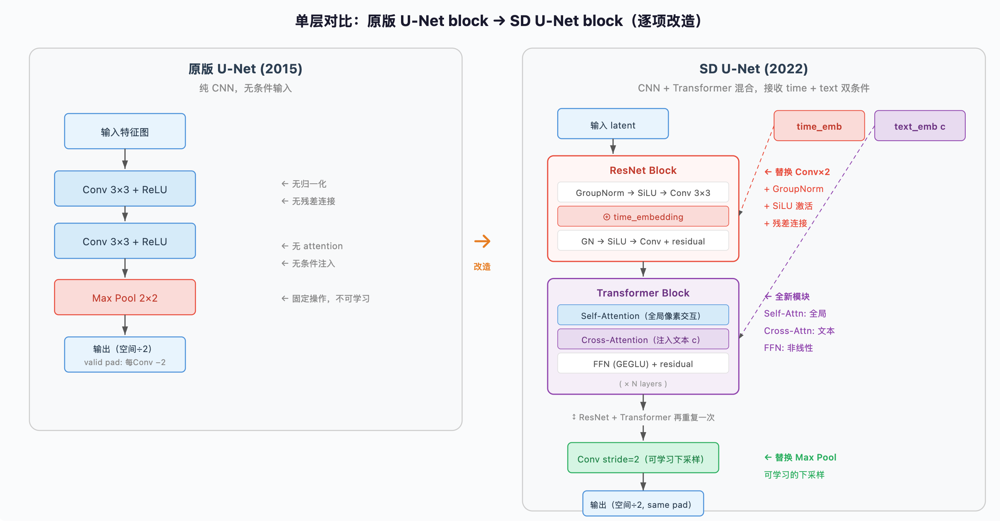
总结：骨架（U 形 encoder-decoder + skip）完全不变，改的全是每层内部的处理单元，从"两次普通卷积"变成"ResNet + Transformer + 双条件注入"。
1.3 SD U-Net 详细结构
还是有点复杂的，花活儿太多感觉容易被时代淘汰，不建议扣细节，直接去看 Transformer backbone 也可以
先明确整个网络的函数签名——SD U-Net 是一个三输入一输出的函数：
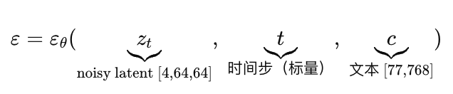
三路输入的注入位置各不相同：
- 主数据流 \(z_t\) - 图像特征，贯穿全网；
- 时间 \(t\) - 噪声程度，注入每个 ResNet Block；
- 文本 \(c\) - 文字 prompt，注入每个 Transformer Block
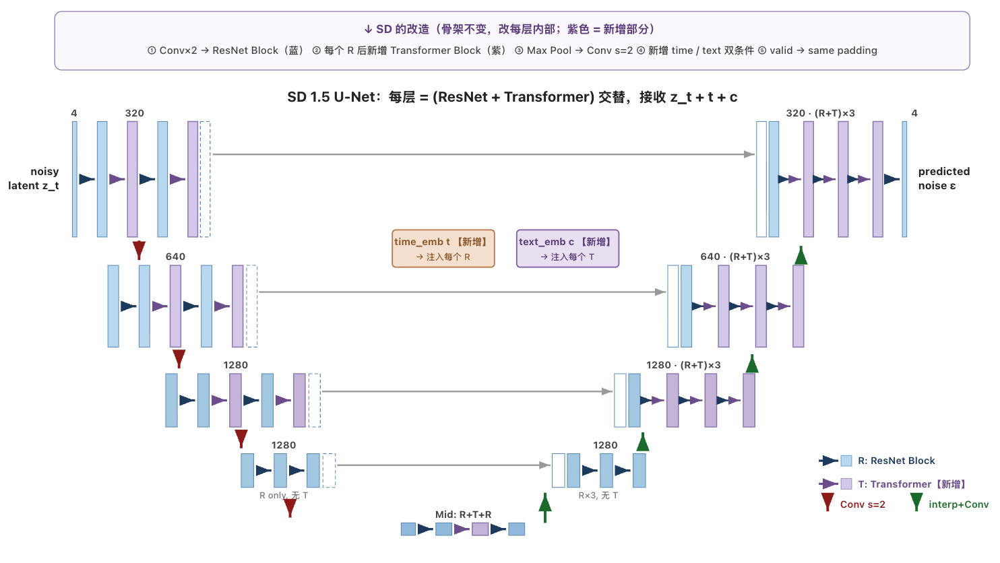
效果：每一层的输出都同时整合了"该去多大噪声"（时间步）和"该生成什么内容"（文本）两路信息。下面分别看两种 block 怎么接收各自的条件。
[① ResNet Block：注入时间步 \(t\)]
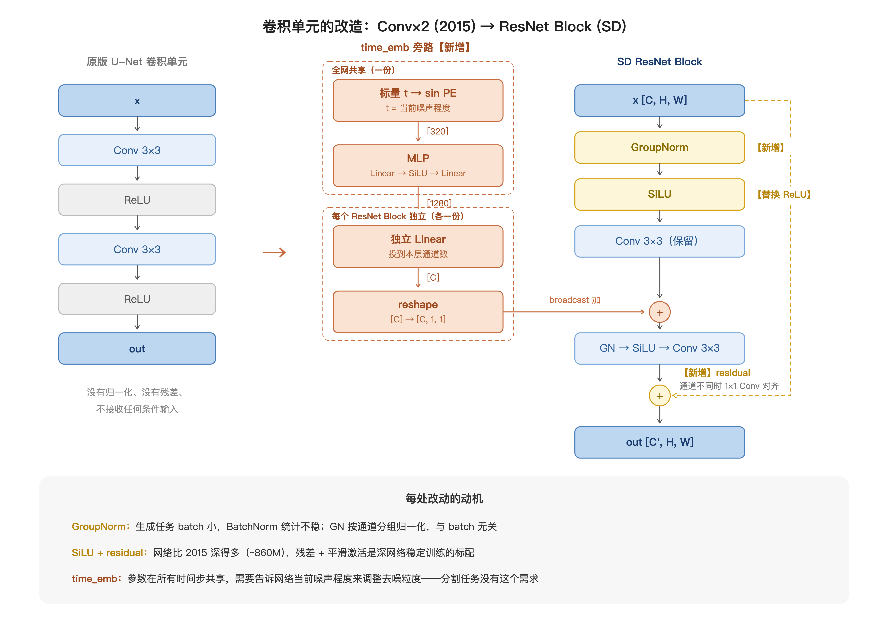
注入链路分四步（对应图中左侧旁路）。\(t\) 从输入起就是一个标量（batch 维上 shape [B]），即噪声程度。处理方式：
-
对于每个 \(t\)，映射到通道数
[C]上- 标量 \(t\) 做 sinusoidal encoding 位置编码 →
[320]向量
-
过一个全网共享的 MLP（Linear → SiLU → Linear）→
[1280]。这两步的维度其实是借鉴了 SD U-Net 主干的 channel 数，但实际没有硬性约束
- 把
[1280]投到自己的通道数[C]——即对上各 block 的 "hidden"
- 标量 \(t\) 做 sinusoidal encoding 位置编码 →
- reshape 成
[C, 1, 1]，broadcast 加到第一次卷积的输出[C, H, W]上。逐通道看：第 \(i\) 个通道的整张 H×W 特征图加同一个标量。噪声程度是全局量，所以刻意不带空间信息。
为什么需要 time embedding？同一套参数要在 \(t\) 大时输出粗略轮廓（去大噪声）、\(t\) 小时输出精细纹理（去小噪声）。time embedding 告诉网络"现在走到第几步了"，让它自适应调整去噪粒度。
注意共享/独立的分工：sinusoidal PE + MLP 全网只有一份（把 \(t\) 编码成通用表示），但每个 block 的投影 Linear 是独立的（每层按需从中提取自己要的信息）。
[② Transformer Block（Spatial Transformer）：Self-Attention + Cross-Attention]
Transformer Block 在 SD 源码中叫 Spatial Transformer。"Spatial" 指它的输入是 2D 空间特征图——处理流程是"flatten 展平 → attention → 折回"三段式：
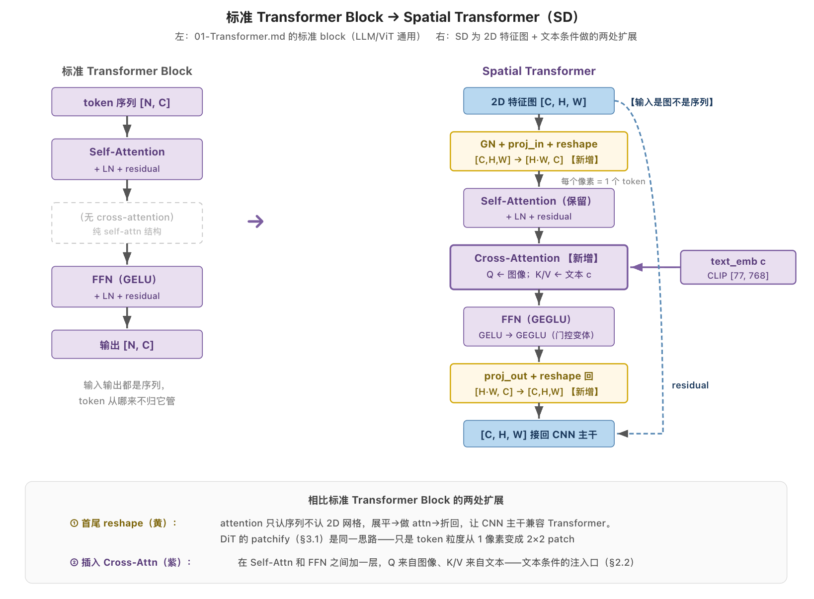
关键是首尾两次 reshape（图中黄色高亮）：attention 只认序列不认 2D 网格，所以先把 [C, H, W] flatten 成 [H·W, C]，每个空间位置变成一个 token（32×32 的特征图 → 1024 个 token）。attention 做完再折回 [C, H, W] 接回 CNN 主干。DiT 的 patchify（§3.1）是同一思路。
中间的 attention 层 里，和普通 attention 只有一个区别——Q/K/V 的来源：
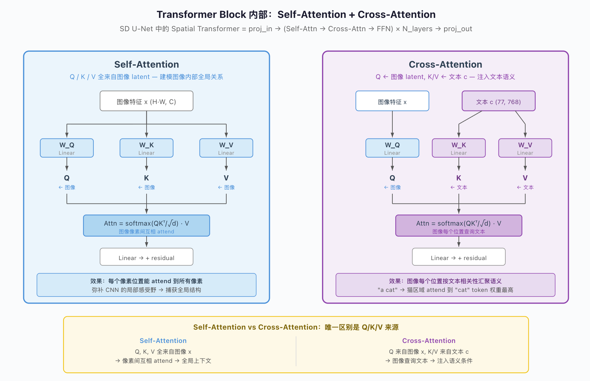
- 普通 Self-Attention：Q、K、V 全来自图像 token。
- 此处 Cross-Attention：Q 来自图像 token，K/V 来自文本条件 \(c\)（CLIP text encoder 输出，
[77, 768]）。
[SD 1.5 各层具体配置]：
| 层级 | 空间分辨率 | 通道数 | Down Block | Up Block | 有 Transformer？ |
|---|---|---|---|---|---|
| Level 1 | 64×64 | 320 | ResNet×2 + Trans×2 | ResNet×3 + Trans×3 | ✓ |
| Level 2 | 32×32 | 640 | ResNet×2 + Trans×2 | ResNet×3 + Trans×3 | ✓ |
| Level 3 | 16×16 | 1280 | ResNet×2 + Trans×2 | ResNet×3 + Trans×3 | ✓ |
| Level 4 | 8×8 | 1280 | ResNet×2 | ResNet×3 | ✗ |
| Mid | 8×8 | 1280 | — | — | ✓ (ResNet + Trans + ResNet) |
两个细节：
- Up Block 比 Down Block 多一个 ResNet（3 vs 2）：因为 skip connection concat 后通道翻倍，需要多一层来融合。
- Level 4 没有 Transformer Block：在最低分辨率（
8×8）不接文本 cross-attention。
1.4 短板：为什么 2023 起要换掉
SD1.x / SDXL 用得住，但 U-Net 有三个短板：
- CNN 归纳偏置在 latent 上收益小：局部性 / 平移等变这些先验是为像素设计的，latent 已是压缩过的特征
- 结构不规则：每层多少个 ResNet、多少个 Transformer、哪层有 cross-attn 哪层没有，全是启发式调参。没有 Transformer 那种干净的 scaling law（加 \(N\) 层就是加 \(N\) 层）
- 扩展性差：想做更高分辨率、更多参数量，U-Net 的多分辨率金字塔结构让放大变得复杂（SDXL 做到 ~2.6B 已经很勉强），不如 Transformer 堆 block 直接
DiT (2023) 就是这个替换（§3.1）：整个 U-Net 换成标准 Transformer。
2. Latent Diffusion / Stable Diffusion
Latent / Stable Diffusion 是使用 U-Net 作为 backbone 的代表模型线
上篇 §3.2 结尾 note 点过：直接在 512×512×3 的像素空间做 diffusion 成本过高。U-Net 每一步处理几十万维张量，T 步下来训练和推理成本都难以接受。
BasicDDIM + U-Net 到产品级文生图，缺三样东西，对应 §2.1–§2.3 三个增量：
| 缺什么 | 增量 | 一句话 |
|---|---|---|
| 算力 | §2.1 搬进 VAE latent | 数据维度降到 ~1/48，消费级显卡可跑 |
| 文本输入 | §2.2 文本条件 | CLIP 编码文本 → cross-attn 注入 |
| 服从度 | §2.3 CFG | 条件/无条件差分外推，放大服从度 |
Latent Diffusion（Rombach et al., 2021.12，开源后即 Stable Diffusion）的第一个增量是一条通用的省算力思路：真正有用的信号是低维的，就到低维空间里做运算。
- LoRA 是这个思路的权重版（权重更新的有效秩很低，用低秩子空间 \(A\cdot B\) 替代全秩 \(\Delta W\)），用的是简单
nn.Linear
- LDM 则是空间版：图像语义远比像素维度低，把 diffusion 从
512×512×3的像素搬到64×64×4的 VAE latent 里做（encoder 是卷积网络：ResNet block + stride-2 Conv 下采样 ×3，瓶颈处带 attention）
2.1 搬进 VAE latent 空间
上篇 §2.3 的 VAE 在这里再次用上。但不用它一步生成，只用 encoder/decoder 做「像素 ↔ 低维特征」的压缩和还原，生成交给 diffusion。
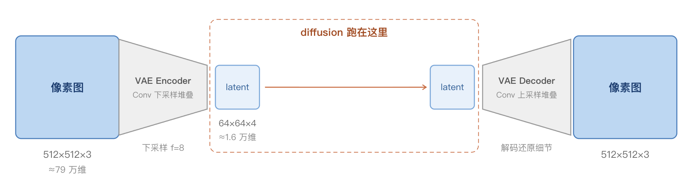
- diffusion 过程整个搬到 latent 上：本质是特征降维，数据维度降到约 1/48，计算量大幅下降。
- 职责分离：VAE 负责像素细节的压缩和还原（预训练后冻结）；diffusion 只在 latent 层面建模分布。高频纹理交给 VAE decoder。
- 这个 VAE 不是上篇的 vanilla VAE：loss 有额外改造（重建更清晰、保住高频纹理），结构细节本篇略过。
这是 SD 能在消费级显卡上跑文生图的直接原因。
2.2 文本条件：cross-attention
到这里还是无条件生成。要让文本控制生成，分两步：(1) 文本怎么变成向量 \(c\), (2) \(c\) 怎么进网络。和 VLM 篇的思路很像。
[主线：两步接线]
-
第一步，文本 → \(c\)：prompt 过 CLIP 的 text encoder（SD1.x 用 CLIP ViT-L/14），得到 token × 768 维的向量序列 \(c\)。
为什么用 CLIP 的 text encoder？因为 CLIP 是图文对比学习预训练的，文本嵌入天生和视觉语义对齐："cat" 的嵌入已经带着"猫长什么样"的信息，diffusion 不用从头学文字到视觉概念的映射。（SD2.x 换成 OpenCLIP，SDXL 用双 text encoder 拼接，思路不变。）
- 第二步，\(c\) → 网络：接线在 §1.3 ② 已经讲过：U-Net 每个 Transformer Block 里的 cross-attention 层，Q 来自图像 latent、K/V 来自 \(c\)，图像每个位置按相关性汇聚文本语义。这里不重复展开。
于是噪声预测网络从 \(\epsilon_\theta(x_t,t)\) 变成 \(\epsilon_\theta(x_t,t,c)\)：多一个输入，训练/采样逻辑不变。
[副线：为什么是 cross-attention——idea来源]
Cross-attention 的本质：就是 2017 原始 Transformer 里 encoder-decoder 之间的那一层：Q 从一个序列（生成端），K/V 从另一个序列（条件端）。Decoder-only LLM（LLaMA / GPT）不带 encoder，也就没有这一层。
同样是图文一起处理，VLM 主流和 SD 的架构选择不一样：
| VLM 主流（LLaVA 范式） | SD (LDM) | |
|---|---|---|
| 主干 | LLM（decoder-only，处理 token 序列） | SD U-Net（处理 spatial latent） |
| 图像怎么进 | Vision encoder → MLP 投影 → 拼接进文本 token 序列 | 图像本身是 diffusion 的主体，不"进入"外部网络 |
| 图文交互 | LLM 内部 self-attention（图文混在初始序列里） | U-Net 里显式插 cross-attention 层 |
| 为什么这么选 | LLM 处理 token 序列，拼接最直接 | U-Net 处理 spatial tensor，没有自然拼接位，必须显式引入 cross-attn |
VLM 早期也试过 cross-attention 注入（Flamingo、Qwen-VL v1，见 01_03_VLM.md §1.5 "范式 A"），但主流最终收敛到 MLP + 拼接（LLaVA 范式）：信息无损、训练稳定、数据高效。
SD1.x / SDXL 一直用 cross-attention，因为 U-Net 里"拼接进 token 序列"这条路走不通。
⚠️ 这个论证只对 U-Net 成立：§3 主干换成 Transformer 后，"拼接进 token 序列"重新可行。
2.3 CFG（classifier-free guidance）
只把 \(c\) 加进去，模型对文本的服从度往往不够。CFG（Ho & Salimans, 2021）手动放大服从度，几乎所有条件 diffusion 都用它。
网络每步做两次预测：有文本的 $\epsilon(c) $ 和没文本的 $\epsilon(\varnothing) $。两者的差 $$ d = \epsilon_\theta(x_t,t,c) - \epsilon_\theta(x_t,t,\varnothing) $$ 就是文本对预测的全部影响，一个"朝文本方向"的修正向量。CFG 把这个修正向量放大 \(w\) 倍，再加回无条件预测： $$ \tilde\epsilon = \epsilon_\theta(x_t,t,\varnothing) + w\cdot d $$ \(w=1\) 还原成普通条件预测 $\epsilon(c) \(；\)w>1$ 沿文本方向过量外推，服从度随之增加。\(w\) 就是 SD 里的 guidance scale（默认 7.5 左右，越大越贴 prompt，太大会过饱和、丢多样性）。
具体做法：
- 训练时：以约 10% 概率把条件 $c $ 换成空条件 $\varnothing $，同一个网络两种模式一起训，这样它才会算 $\epsilon(\varnothing) $
- 采样时：每步跑两次前向（有条件 + 无条件），按上式外推
- 代价：每步两次前向，推理成本 ×2
negative prompt 就是同一条公式：把无条件分支的 \(\varnothing\) 换成负面提示词 \(c_{\text{neg}}\)（"blurry, low quality, extra fingers"），修正向量 $d $ 的方向从"朝向 \(c\)"变成"远离 \(c_{\text{neg}}\)、朝向 \(c\)"。数学上没有新东西。
2.4 整体结构
把 §1（U-Net）+ §2.1~§2.3（latent + 文本 + CFG）拼起来，就是 SD1.x 的全貌：
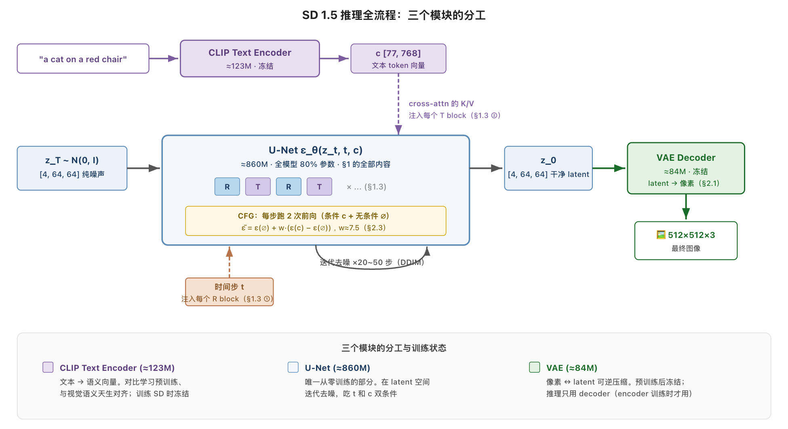
三个模块的分工和训练状态如下，只有 U-Net 是从零训的：
| 模块 | 参数量 | 职责 | 训练状态 |
|---|---|---|---|
| CLIP Text Encoder | ≈123M | 文本 → 语义向量 \(c\)（§2.2） | 预训练冻结 |
| U-Net | ≈860M | latent 空间迭代去噪，使用 \(t\) + \(c\) 双条件（§1） | 从零训练 |
| VAE | ≈84M | 像素 ↔ latent 压缩（§2.1）；推理只用 decoder | 预训练冻结 |
SD3 / FLUX 后来把 U-Net 换成 MMDiT，backbone 侧的变化见 §3；训练目标也换了，见 §4。所有代际的差异汇总见 §5。
2.5 简化代码：MiniSD
和上篇 §7 BasicDDIM 的关系：
- 框架层：在 BasicDDIM 的基础上加了3 处 diff，正好对应 §2.1–§2.3（VAE latent、文本条件 c、CFG）
- 噪声网络 \(\epsilon_\theta\) 内部（SD U-Net）只 call 不展开
代码注释约定（本篇通用）：# ← 开头 = 相对 baseline 的新增行（此处基线为上篇 BasicDDIM）；普通注释 = 照搬部分的说明。
# ---- 训练 step (vs 上篇 §4.1) ----
def train_step_sd(x0_pixel, prompt, model, vae, text_enc):
z0 = vae.encode(x0_pixel).detach() # ← latent: 像素 → latent（VAE 冻结，§2.1）
c = text_enc(prompt) # ← 条件: 文本 → 条件向量（§2.2）
B = z0.size(0)
drop = (torch.rand(B) < 0.1).view(B, 1, 1) # ← CFG: 条件 dropout 10%（§2.3）
c = torch.where(drop, null_c, c) # 换成 null 条件
t = torch.randint(0, T, (B,))
eps = torch.randn_like(z0)
a = abar[t].view(B, 1, 1, 1)
zt = a.sqrt() * z0 + (1 - a).sqrt() * eps # 加噪公式和上篇 §4.1 一字不差，只是 x → z
eps_pred = model(zt, t, c) # ← 条件: ε_θ 多接一个 c
return F.mse_loss(eps_pred, eps)
# ---- 采样 step (vs 上篇 §5.2 DDIM，这里为简洁写 DDPM 版) ----
@torch.no_grad()
def sample_sd(model, vae, text_enc, prompt, shape, w=7.5):
c = text_enc(prompt) # ← 条件: 文本 → 条件向量
z = torch.randn(shape) # 同上篇，只是起点在 latent 空间
for t in reversed(range(T)):
eps_c = model(z, t, c) # ← 条件: 条件预测（多接 c）
eps_un = model(z, t, null_c) # ← CFG: 无条件预测（多一次前向）
eps = eps_un + w * (eps_c - eps_un) # ← CFG: 外推（§2.3 公式）
# 之后 mean / 方差项和上篇 §4.2 完全一样
mean = (z - (1 - alphas[t]) / (1 - abar[t]).sqrt() * eps) / alphas[t].sqrt()
z = mean + (betas[t].sqrt() * torch.randn_like(z) if t > 0 else 0)
return vae.decode(z) # ← latent: latent → 像素
相对 BasicDDIM 三处改动（按代价 / 收益顺序）：
- 搬进 latent：
z0 = vae.encode(x0)；数据流从(B, 3, 512, 512)变成(B, 4, 64, 64)。省算力，不改公式。 - 注入文本：\(\epsilon_\theta(z_t, t, c)\)；\(\epsilon_\theta\) 内部 U-Net 每一 block 插 cross-attention 层（Q 来自图像 latent、K/V 来自 c）。文本编码沿用 CLIP（01_03_VLM.md）。
- CFG：训练加条件 dropout、采样每步跑两次前向按 \(w\) 外推。推理成本 ×2，最贵但换来对文本的服从度。
\(\epsilon_\theta\) 内部（U-Net vs Transformer）和上篇 §4.1 / §5.2 的训练采样逻辑解耦。§3 换成 Transformer，就是替换这一个 model。端到端可跑的 toy 版见 §7 ipynb。
3. 进阶 backbone: Transformer 系列
还是 Transformer 结构更具有简化的数学之美！
§2 走完了 U-Net 时代。但因为 §1.4 的短板，2023 起 backbone 换成 Transformer，分两步：
- §3.1 DiT：U-Net 换成标准 Transformer + conv patchify + adaLN-Zero 注入条件
- §3.2 MMDiT：文本注入也换掉，cross-attn 改成"文本图像拼一条序列做联合 self-attn"，架构和 VLM 主流合流
SD3 / FLUX 这一代在 backbone 之外还换了训练目标，那是 §4。
3.1 DiT：换成 Transformer + adaLN-Zero
注意：这里的 \(c\) 不是文本 prompt，是类别标签
DiT (Peebles & Xie, 2023) 把噪声网络 \(\epsilon_\theta\) 整个换成标准 Transformer。生成模型的工程栈从此和 LLM 对齐，01_01_Transformer.md 和 01_03_VLM.md 里的 Transformer 和 ViT 几乎直接复用。
先看整体：DiT 跑在 §2 的 latent 上（LDM + Transformer），函数签名不变，还是三输入 \(\epsilon_\theta(z_t, t, c)\)，内部从 U 形变成一条流水线。
但注意 \(c\) 的内容变了：DiT 原论文不是文生图，是 ImageNet 类别生成——\(c\) 从 §2 的文本 prompt 换成类别标签（1000 类选一），整个模型没有 text encoder。文生图怎么搬回 DiT 上，是 §3.2 的事。
三路输入的处理，只有注入方式是新的：
- 主数据流 \(z_t\) - 图像特征：VAE latent 过 conv 切 patch 变 token（patchify 同 ViT，对象从像素换成 latent）
- 时间 \(t\) - 噪声程度：先沿用 §1.3 前两步（sinusoidal + MLP）变成向量
- 条件 \(c\) - 类别标签：查 embedding 表得到单个向量，和 \(t\) 向量相加合成一个条件向量，走 adaLN-Zero 注入
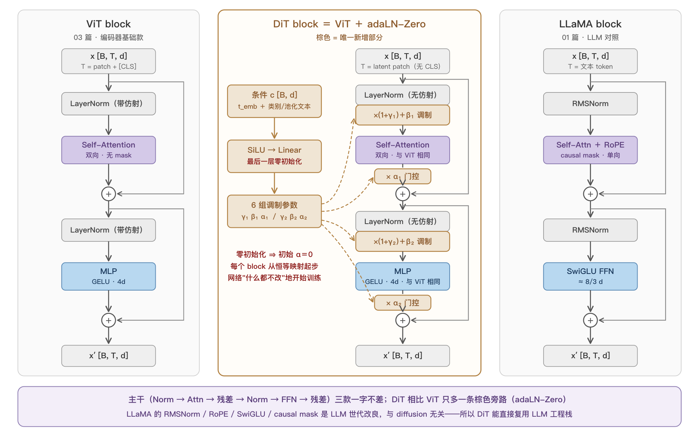
对着图从左到右过一遍：
- 编码入口：三者都要先把原始输入变成 token 序列
[B, T, d]，起点不同- LLaMA：文本过 tokenizer 词表得离散 id，再查 embedding 表变 d 维向量
- ViT：像素图直接过 conv patchify 切不重叠 patch，conv 一步兼做「切词 + embedding」
- DiT：入口做的事和 ViT 完全一样——conv 切 patch + 投影 + 2D sin-cos 位置编码。区别只在输入：不是像素，是 §2.1 已压好的 VAE latent（如
32×32×4） - 注意 VAE 只负责压缩：输出仍是 2D 特征图，不做 token 化、不带位置编码。
- 主干：N 个 Transformer block（self-attention + FFN）。空间关系靠位置编码 + attention。
- 出口：
- ViT 做分类：取 BERT 沿用来的 [CLS] 分类位，过分类头
- DiT 做逐 patch 预测：Final Layer 把 hidden dim 投影回 latent 形状，输出还是 ε̂（或 §4 的 v̂）
- LLaMA：LM head 逐位置出 next-token logits
所以唯一真正新的东西，是噪声等级 \(t\) 和条件 \(c\) 怎么注入，即 adaLN-Zero
[adaLN-Zero]
- U-Net 时代 \(t\) 靠编码 + MLP 后 broadcast 加法、\(c\) 靠 cross-attn（§1.3）
- DiT 把两者合成一个向量，用 adaLN-Zero（自适应 LayerNorm，零初始化） 从旁路注入每个 block
把 DiT block 和已熟的 ViT block 摆在一起对比：
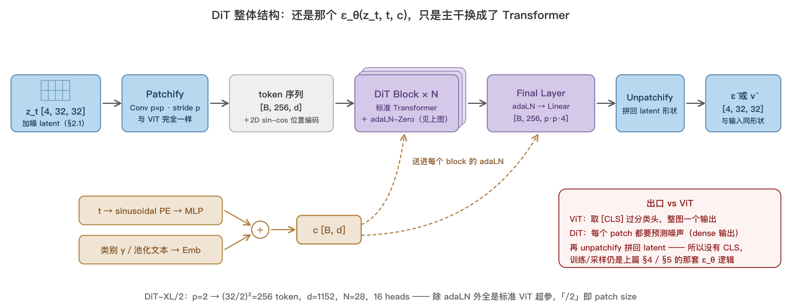
机制分三步：① adaLN 从 \(c\) 回归出 shift / scale / gate；② LayerNorm（去掉自带仿射）后用 shift / scale 做仿射调制；③ attention / FFN 输出乘 gate 再残差相加。Zero 指 gate 零初始化——训练起点每个 block 都是恒等映射，深网络训练更稳。
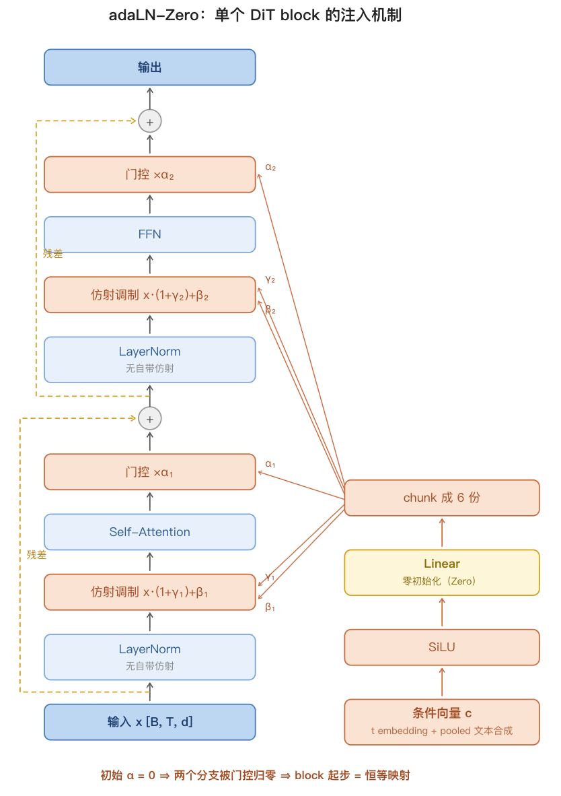
一个 DiT block 的代码（条件 \(c\) 已经合成好），和机制三步逐行对应。# ← 标出相对 ViT block 的改动，其余行就是标准 Transformer block：
def modulate(x, shift, scale): # ← 新增: adaLN 的仿射调制，LN 之后做
return x * (1 + scale.unsqueeze(1)) + shift.unsqueeze(1)
class DiTBlock(nn.Module):
def __init__(self, d, n_heads, mlp_ratio=4.0):
super().__init__()
self.norm1 = nn.LayerNorm(d, elementwise_affine=False, eps=1e-6) # ← 去掉自带仿射，交给 adaLN
self.attn = SelfAttention(d, n_heads) # 标准 MHA（见 01_01_Transformer.md）
self.norm2 = nn.LayerNorm(d, elementwise_affine=False, eps=1e-6) # ← 同上
self.mlp = MLP(d, int(d * mlp_ratio)) # 标准 FFN
self.adaLN = nn.Sequential(nn.SiLU(), nn.Linear(d, 6 * d)) # ← 新增: 从 c 回归 6 组调制参数
nn.init.zeros_(self.adaLN[-1].weight) # ← 新增(Zero): 零初始化
nn.init.zeros_(self.adaLN[-1].bias) # 初始 gate=0 → block 退化成恒等
def forward(self, x, c): # x: [B, T, d] 图像 token；← 多接条件 c: [B, d]
shift1, scale1, gate1, shift2, scale2, gate2 = self.adaLN(c).chunk(6, dim=-1) # ← 新增
x = x + gate1.unsqueeze(1) * self.attn(modulate(self.norm1(x), shift1, scale1)) # ← 加调制 + 门控
x = x + gate2.unsqueeze(1) * self.mlp (modulate(self.norm2(x), shift2, scale2)) # ← 同上
return x
3.2 MMDiT：拼接 + 联合 self-attn
本节只讲一件事：文本 prompt \(c\) 怎么进 Transformer backbone。（§3.1 DiT 的 \(c\) 还是类别标签）
分两代：过渡期（PixArt）沿用 cross-attn，MMDiT（SD3 / FLUX）换成拼接。
[过渡期：文本先加回 cross-attn（PixArt 一代）]
- §3.1 的 DiT 是类别条件，文生图要把 \(c\) 换成文本。但 adaLN 只接收单个全局向量，文本序列 pool 成一个向量会丢信息
- 过渡方案（PixArt-α, 2023.10 等）把条件拆两路：\(t\) + 类别照旧走 adaLN；逐 token 文本序列在每个 block 里加回 §2.2 的 cross-attention
- 局限同 §2.2 结尾 caveat：cross-attn 里文本 token 每层只被图像 单向查询，自己不交互、也看不到图像
[MMDiT：两个独立 Transformer，仅在 attention 处拼接]
SD3 / FLUX (2024) 的 MMDiT (Multi-Modal DiT)，用 SD3 论文的自我概括一句话：两套独立权重、两个独立 Transformer，仅在 attention 处拼接序列。
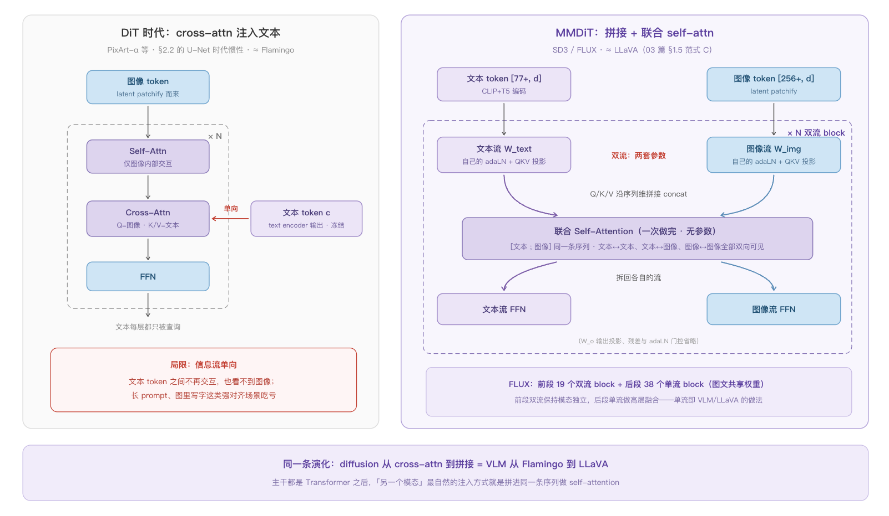
对着图（左 cross-attn，右 MMDiT）把这句话展开：
- 入口（进 backbone 前）：文本过 text encoder（CLIP / T5；T5 是纯文本 encoder-decoder 模型，这里只用其 encoder）、图像过 VAE + patchify，各自变成 token 序列
- block 内：
- 两路先各用自己的 adaLN（\(t\) + pooled 文本注入）+ QKV 投影
- Attention - 唯一合并点：两路 Q/K/V 沿序列维拼接，softmax 在整条混合序列上算一次，每个 token 双向看到两个模态
- 切回两路：attention 输出按位置切开，各自过自己的输出投影 + FFN
分开/合并的判定标准是有没有参数：带权重的组件（adaLN / QKV / 输出投影 / FFN）每模态一套；合并的只有 softmax(QKᵀ)V 这步无参数运算。「合流」合的是信息流，不是参数。
[对照 VLM 主流：双流 vs 单流]
拼接思路和 VLM 主流相同（LLaVA 范式 C，见 01_03_VLM.md §1.5），差别在几套权重：
| VLM 主流（LLaVA 范式 C） | MMDiT (SD3 / FLUX) | |
|---|---|---|
| 几个 Transformer | 一个，图文共用权重（单流） | 两个独立，图文各一套权重（双流） |
| 拼接发生在哪 | 入口拼一次，之后全程一条序列 | 每个 block 的 attention 处拼，算完切回两路 |
| 图像侧怎么进 | vision encoder → MLP → 拼接进 LLM 序列 | VAE + patchify → 进自己的图像流 |
- 「双流/单流」即 FLUX 官方代码的类名
DoubleStreamBlock/SingleStreamBlock
backbone 的演化到 MMDiT 为止：图像生成和 VLM 收敛到同一架构范式。SD3 / FLUX 最后一处改动是训练目标，见 §4。
4. Flow Matching: 训练目标 ε → v（SD3 / FLUX）
积分路径从曲线换成直线（导数恒定了）
§3 换完 backbone 后，SD3 / FLUX (2024) 还做了最后一件事：换训练目标，从噪声 ε (DDPM) 换成速度场 v (flow matching)。
到这里 SD3 / FLUX 的三块全齐了：latent + 文本 + CFG（§2，从上一代继承）、MMDiT backbone（§3.2）、flow matching 训练目标（本节）。
4.1 Flow Matching：把弯路径换成直线
[问题：DDPM 的路径是弯的]
回看 DDPM 前向公式（上篇 §3.1，像素空间记号；在 latent 里把 \(x\) 换成 \(z\) 同形）：\(x_t=\sqrt{\bar\alpha_t}\,x_0+\sqrt{1-\bar\alpha_t}\,\epsilon\)。两个系数都是 \(t\) 的非线性函数，所以 \(x_t\) 从数据走到噪声，走的是一条弯曲路径。采样要沿这条曲线积分：方向随 \(t\) 一直在变，步子大了就偏离曲线，只能小步多走——这是采样慢的几何原因。
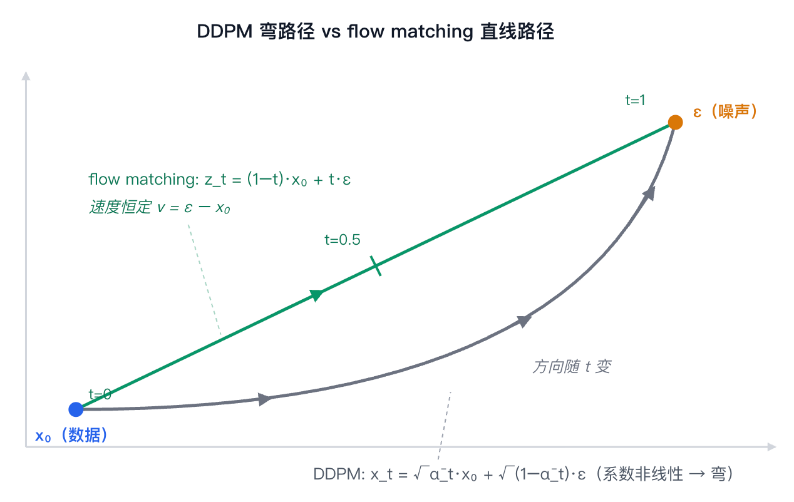
[改动一：路径换成直线]
flow matching 直接把数据和噪声之间的路径定义成直线插值。约定 \(t\in[0,1]\) 连续（不再是 1000 个离散步）；\(z_0\) 是干净数据（latent，见前言符号约定）、\(\epsilon\) 是纯噪声：
\(t=0\) 在数据端，\(t=1\) 在噪声端。两个系数 \((1-t)\) 和 \(t\) 都是 \(t\) 的线性函数——这就是「直」的含义。
[改动二：学的量换成速度 v]
直线上是匀速运动，速度 = 终点 − 起点，处处相同：
训练仍是纯 MSE，只是 target 从「噪声 ε」换成「速度 v」。\(z_0 / \epsilon / v\) 三种 target 靠前向公式线性互换，是参数化选择、不是不同模型（之前只用了 ε）。
[采样：沿速度场倒着走]
简单来说：求 v，然后由终点反解起点
计算本身只是匀速直线运动，但涉及两个术语：
- ODE（Ordinary Differential Equation，常微分方程）：形如 \(\frac{dz}{dt}=v(z,t)\) 的方程——给出每一时刻的导数，从初值出发就能把整条轨迹积出来。训好的 \(v_\theta\) 正好就是这个导数，所以采样 = 解一个 ODE（求 v）
- Euler 法：解 ODE 最朴素的数值方法——沿当前导数直走一小步 \(z \leftarrow z + v\,\Delta t\)，重复 N 步。上篇 §5 的 DDIM 跳步本质也是在解 ODE，只是解法写成了"反解 \(\hat x_0\) 再合成"
具体到 flow matching：从 \(t=1\) 的纯噪声出发，每步问网络"当前速度是多少"，逆着速度走一小步：\(z \leftarrow z - v_\theta(z,t)\,\Delta t\)（代码见 §4.2）。路径是直的，大步走也不偏：20 步质量接近 DDIM 50 步，也更容易蒸馏到 1~4 步。
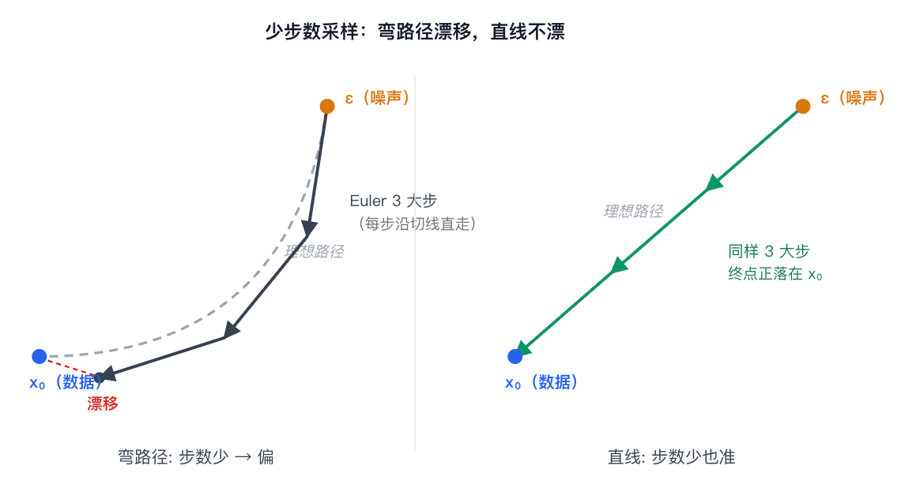
两条补充：
- SD3 配套把 \(t\) 按 logit-normal 分布采样（标准高斯过 sigmoid 压进 \((0,1)\)，见 §4.2 代码），中间时刻采得更密。为什么中间难？和选哪个 target 无关：由上面的线性互换，预测 ε / v 都等价于「从混合物 \(z_t\) 估出干净图 \(\mathbb E[z_0|z_t]\)」。\(t\approx0\) 时答案几乎就在输入里；\(t\approx1\) 时最优猜测退化成数据集均值；中间图噪幅度相当，必须真正推断图像内容——最难，训练预算堆在这里
- 命名：「直线插值」这个具体方案的原始论文叫 Rectified Flow，SD3 论文沿用此名；flow matching 是包含它的一般框架。两者在本篇语境下可当同义词，统一用 flow matching
4.2 简化代码：MiniFLUX
和 §2.5 MiniSD 的关系有两层：
- 训练/采样框架：diff 在训练 target（ε → v）和采样方式
- 主干
model：从"只 call 的 U-Net"换成手写的双流 MMDiT block——即 FLUX 实际用的结构（§3.2）。代码不在本节展开：每条流的参数就是一个 §3.1 的 DiTBlock，双流版 = 两套 DiTBlock 参数 + 每层拼一次联合 attention，完整实现见 §7 ipynb
# ---- 训练 step (vs §2.5 MiniSD: 只换 t 采样 + target) ----
def train_step_fm(x0_pixel, prompt, model, vae, text_enc):
z0 = vae.encode(x0_pixel).detach()
c = text_enc(prompt)
B = z0.size(0)
drop = (torch.rand(B) < 0.1).view(B, 1, 1)
c = torch.where(drop, null_c, c)
# ← FM: t 从 [0,1] 连续采（SD3 用 logit-normal，中间时刻更密）
t = torch.sigmoid(torch.randn(B))
t_bc = t.view(B, 1, 1, 1)
eps = torch.randn_like(z0)
zt = (1 - t_bc) * z0 + t_bc * eps # ← FM: 直线插值代替 DDPM 加噪公式
v_gt = eps - z0 # ← FM: target 从 ε 换成速度 v
v_pred = model(zt, t, c) # ← 主干已换成 Transformer（§3），调用接口不变
return F.mse_loss(v_pred, v_gt)
# ---- 采样 (vs §2.5 sample_sd / DDIM 反解: 换 Euler 解 ODE) ----
@torch.no_grad()
def sample_fm(model, vae, text_enc, prompt, shape, steps=20, w=7.5):
c = text_enc(prompt)
z = torch.randn(shape) # 从 t=1（纯噪）起
dt = 1.0 / steps
for i in range(steps): # ← FM: 20 步就够
t = 1.0 - i * dt
v_c = model(z, t, c)
v_un = model(z, t, null_c)
v = v_un + w * (v_c - v_un) # CFG 公式和 §2.3 一字不差
z = z - v * dt # ← FM: Euler 一阶 ODE，dz/dt = v
return vae.decode(z)
相对 §2.5 MiniSD 的改动：
- 训练 target: ε → v：MSE 形式一样，v = ε − z₀ 只是前向公式的另一种线性组合
- t 连续 + logit-normal：中间时刻采得更密，噪声较大 / 较小的两端相对稀
- 采样换成 Euler 解 ODE：直线路径 dz/dt = v 恒定（§4.1），20 步质量接近 DDIM 50 步；对 1~4 步蒸馏也更友好
- 主干换成手写 Transformer：DiT block 见 §3.1 代码；双流 MMDiT block + patchify/unpatchify 全套见 §7 ipynb
5. 代际对照：SD1.x / SDXL / SD3 / FLUX
从 SD (Stable Diffusion) 第一代到当前 SOTA，backbone (§1 → §3) 和训练目标 (§4) 两个维度映射到具体产品：
| 模型 | 上市 | Backbone | 训练目标 | 关键 diff |
|---|---|---|---|---|
| SD 1.4 / 1.5 | 2022.08 | U-Net | ε (DDPM) | LDM 论文的开源版（~0.9B） |
| SD 2.x | 2022.11 | U-Net | ε | 换开源 CLIP，规模不变 |
| SDXL | 2023.07 | U-Net 做大 + refiner | ε | ~2.6B，U-Net 路线的极限 |
| SD3 | 2024.03 | MMDiT（双流） | flow matching (v) | 换 backbone + 换目标（0.8B~8B 多档） |
| FLUX.1 | 2024.08 | MMDiT + 后段单流 block | flow matching (v) | SD3 路线的规模化（~12B） |
refiner（SDXL 行）：第二个 U-Net，对 base 输出的 latent 在低噪声区间再做一遍去噪精修，可选组件。
三条演化主线：
- 框架不变：最小核（MSE 回归 + 迭代采样）+ latent 空间 + 文本条件 + CFG，五代都用这个骨架（§2）
- Backbone 演化：U-Net (§1) → U-Net 做大 → MMDiT 双流 → MMDiT + 单流后段（§3）
- 训练目标演化：ε (DDPM) → v (flow matching)，从 SD3 起换（§4）
命名说明：SD = Stable Diffusion，Stability AI 的产品线（SD1 → SD3）；FLUX 出自 Black Forest Labs，由 Stability 核心成员（含 LDM 原作者）离职创立，走 SD3 同一路线。所以 SD3 和 FLUX 是同代不同家。
6. 总结（两篇合起来）
上下两篇 = 一个公共最小核 + 逐层增量，对应前言的两层：
- 框架层最小核（上篇）：VAE 一步生成糊 → DDPM 拆成 T 步去噪，DDIM 路径压缩（网络当黑盒 -> BasicDDIM）
- 框架层增量（本篇 §2、§4）：搬进 VAE latent (省算力) + 文本注入 + CFG (服从度++) ；SD3 / FLUX 再把训练目标 ε 换成 v
- 网络层增量（本篇 §1、§3）：U-Net → Transformer (DiT、MMDiT)
- 产品对号（本篇 §5）：SD1.x / SD2.x / SDXL = U-Net + ε；SD3 / FLUX = MMDiT + v
7. 代码实现
覆盖本篇两个简化模型，MNIST 上端到端可跑：10_mini_sd_flux.ipynb ｜ colab（T4 单卡 ≈ 7 分钟）。
- 基座：上篇 BasicDDIM 的组件原样搬运
- MiniSD（§2）：框架加三增量——VAE latent（tiny AE）、类别标签当"Text"、CFG；网络 U-Net 只 call 不展开
- MiniFLUX（§3 + §4）：框架目标换成 v；主干手写双流 MMDiT（patchify + adaLN-Zero + 联合 attention）
结果：
① MiniSD（1.14M，训 2min）：DDIM 50 步、CFG w=3（听文字的话），约八成可辨
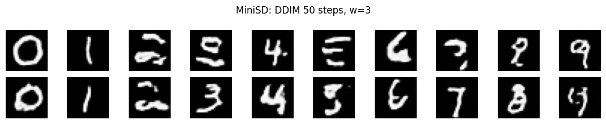
② MiniFLUX（2.45M，训 3min）：采样（§4.1）20 步，数字全部按标签对齐、字形清晰；步数减到 8，质量几乎不降——直线路径大步走不偏，少步优势 toy 上即可复现。出图好于 MiniSD（但参数量未对齐，只能当个趋势看）
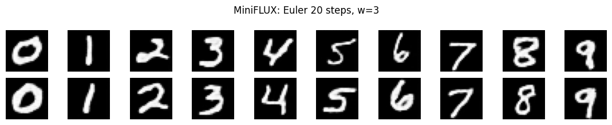